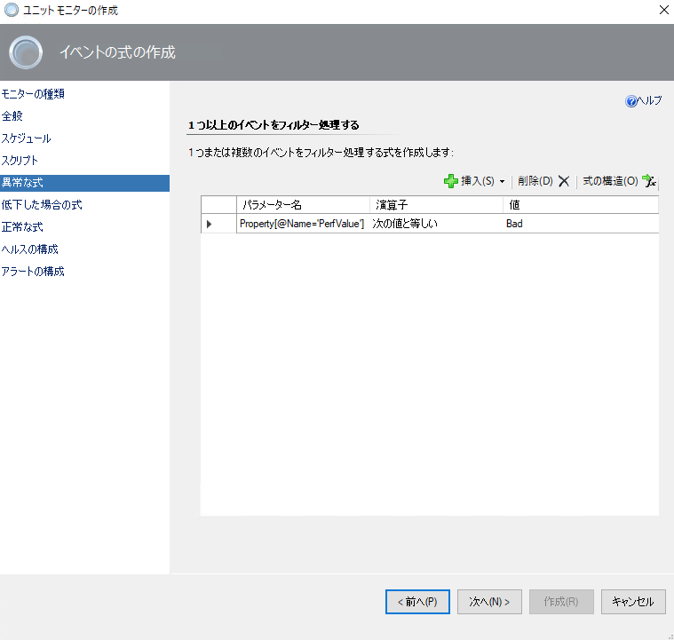
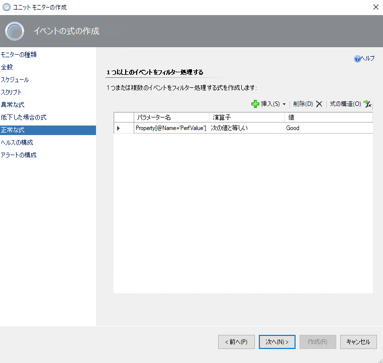
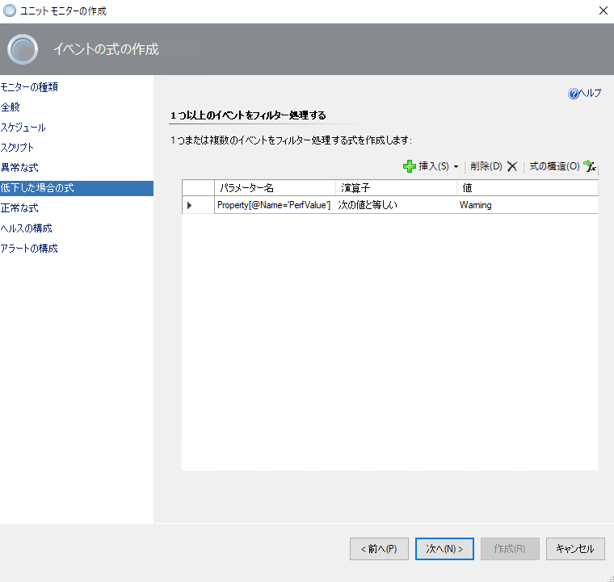
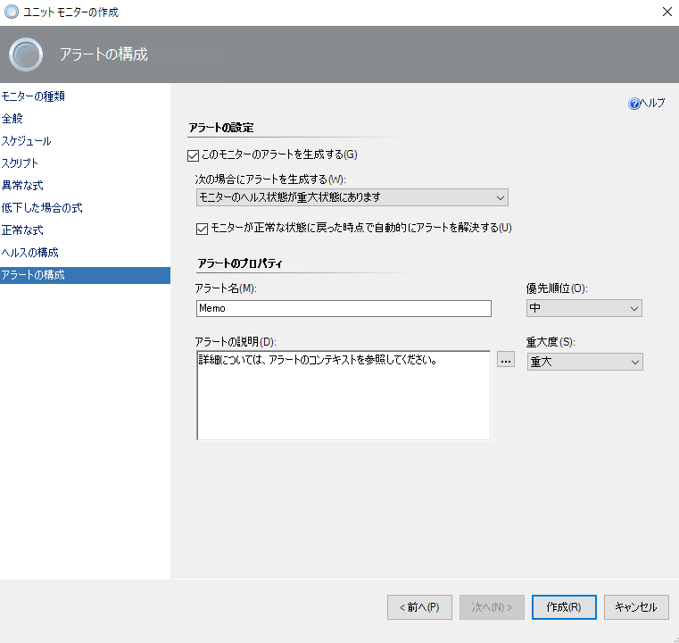
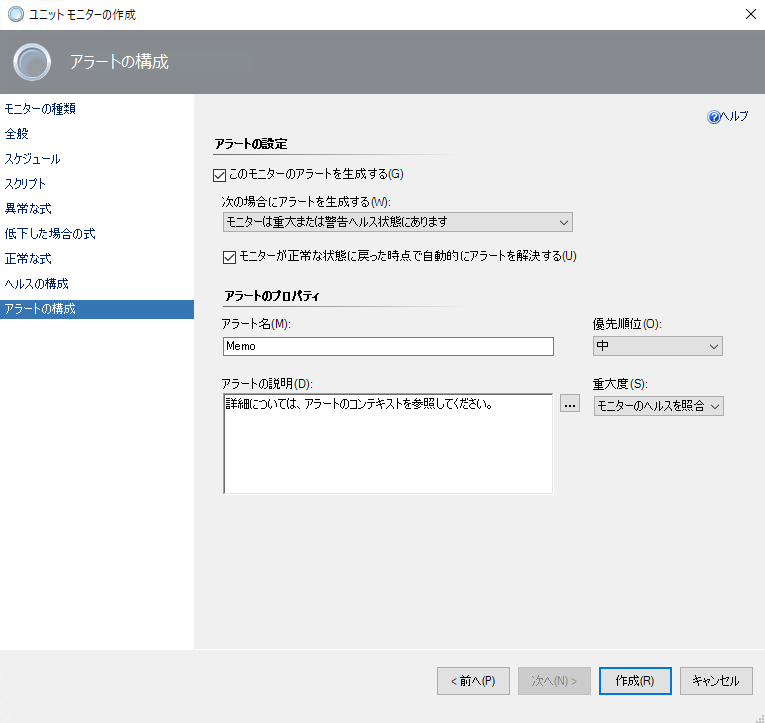
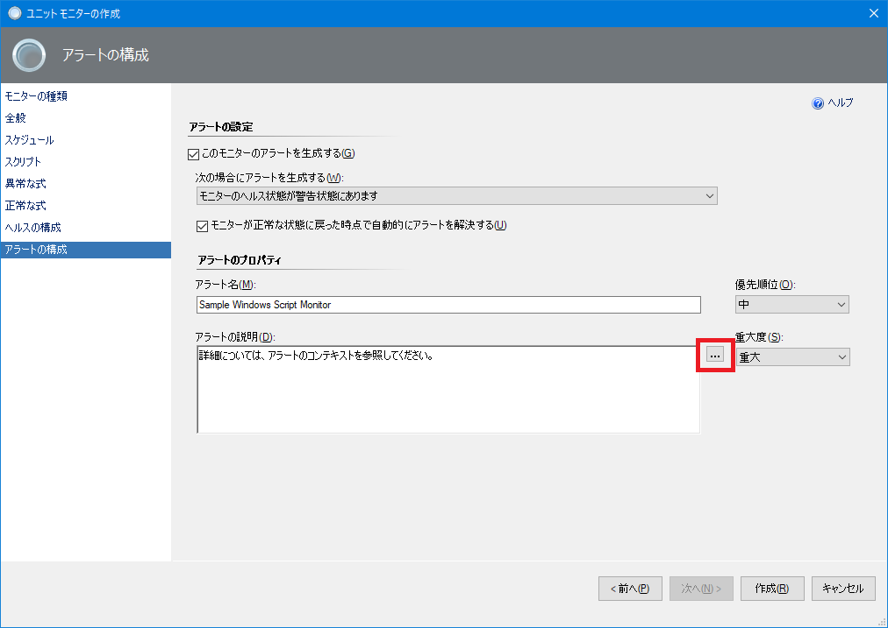

皆様こんにちは、System Center サポートチームの保科です。
本日は、System Center Operations Manager (以後 SCOM と表記します) で、Windows OS のメモリ使用率を監視する方法をご紹介いたします。
SCOM 2016
SCOM 2019
SCOM 2022
概要
SCOM では、パフォーマンス カウンターの監視を行うモニターを作成することが出来ます。
これにより、サーバーによって重要なパフォーマンス カウンターを監視し、必要に応じてアラートを発生するといった構成を可能とします。
CPU やメモリ使用率は、多くのお客様がサーバーの重要なパフォーマンス指標として監視要件をお持ちと存じます。
CPU 使用率はパフォーマンス カウンターとしての取得が可能で、メモリは以下カウンターで空き容量の実値が取得可能です。
- バイト単位: Memory\Available Bytes
- キロバイト単位: Memory\Available KBytes
- メガバイト単位: Memory\Available MBytes
しかし、メモリ使用率はパフォーマンス カウンターとしては提供されておりません。
そのため、SCOM のパフォーマンス カウンターの監視モニターでも、メモリ使用率の監視は行えません。
メモリ使用率の監視にあたっては、スクリプト等によって、割り当てメモリと使用メモリからメモリ使用率の算出が必要となります。
今回の記事では、その算出を行う SCOM 用のサンプル スクリプトをご紹介とします。
サンプル スクリプトの監視シナリオ
今回ご紹介するサンプル スクリプトは vbs スクリプトで、以下の処理で監視を行います。
- OS に割り当てられているメモリと、メモリの空き容量を WMI クラスより取得します。
この処理で参照する WMI クラスは “Win32_OperatingSystem” です。 - OS に割り当てられているメモリから、メモリの空き容量を減算し、その値を 1024 で除算します。
これによって、メモリの使用容量を MB 単位に変換して算出します。 - OS で利用可能なメモリ容量を WMI クラスより取得します。
この処理で参照する WMI クラスは “Win32_PerfRawData_Counters_HyperVDynamicMemoryIntegrationServic” です。
1. の処理で取得している、OS に割り当てられているメモリとの相違点は、例えば動的メモリが設定されている仮想マシンの場合は、動的メモリで割り当て可能なメモリの最大容量を取得する点です。
逆に、1. の処理で取得している、OS に割り当てられているメモリは、動的メモリが設定されている場合は、現在仮想マシンに割り当てられているメモリ容量を取得します。
この処理によって、動的メモリで運用されている仮想マシンも、動的メモリで割り当て可能なメモリの最大値から見たメモリ使用率を算出することが可能です。
なお、物理マシンではこの WMI クラスが利用不可なので、その場合は 1. と同様”Win32_OperatingSystem” クラスを使用します。 - 2. で算出した値と 3. で取得した値を除算し、その値を 100 で乗算します。
これによってメモリ使用率の割合を算出します。
スクリプト監視モニターの仕様上、値を SCOM に渡した場合、その値は文字列として扱われます。
そのため、監視値の正常判定はスクリプト内で行います。
サンプルスクリプト
ご紹介しますスクリプトは、Hyper-V 仮想マシンの動的メモリも考慮したメモリ空き容量の割合を計算する処理としています。
物理マシンのメモリ空き容量を計算する場合、もしくは仮想マシンの現在割り当てられたメモリ容量を参照とした空き容量の割合計算を実施される場合、コメント アウトされた箇所をお読みの上、スクリプトを書き換えてください。
2 つのヘルス状態に基づく監視を行う場合のサンプル スクリプト:
1
2
3
4
5
6
7
8
9
10
11
12
13
14
15
16
17
18
19
20
21
22
23
24
25
26
27
28
29
30
31
32
33
34
35
36
37
38Dim oArgs, objWMIService, colItems, usedPhysicalMemory, totalPhysicalMemory, usedRAMSizePercentage, threshold
Set oArgs = Wscript.Arguments
threshold = Cdbl(oArgs(0))
Set objWMIService = GetObject("winmgmts:\\.\root\cimv2")
Set colItems = objWMIService.ExecQuery("Select * from Win32_OperatingSystem")
For Each objItem in colItems
usedPhysicalMemory = (objItem.TotalVisibleMemorySize - objItem.FreePhysicalMemory) /1024
' 物理マシンのメモリ割り当て容量、もしくは仮想マシンの現状のメモリ割り当て容量を確認したい場合、以下の処理のコメント アウトを削除します。
' totalPhysicalMemory = objItem.TotalVisibleMemorySize / 1024
Next
' 物理マシンのメモリ割り当て容量、もしくは仮想マシンの現状のメモリ割り当て容量を確認したい場合、指定範囲の処理を削除します。
' 削除範囲ここから
Set colItems = objWMIService.ExecQuery("SELECT * FROM Win32_PerfRawData_Counters_HyperVDynamicMemoryIntegrationService",,48)
For Each objItem in colItems
totalPhysicalMemory = objItem.MaximumMemoryMbytes
Next
' 削除範囲ここまで
usedRAMSizePercentage = usedPhysicalMemory / totalPhysicalMemory * 100
if usedRAMSizePercentage > threshold then
Set oAPI = CreateObject("MOM.ScriptAPI")
Set oBag = oAPI.CreatePropertyBag()
Call oBag.AddValue("PerfValue", "Bad")
Call oBag.AddValue("usedRAMSizePercentage", usedRAMSizePercentage)
Call oBag.AddValue("usedPhysicalMemory", usedPhysicalMemory)
Call oAPI.Return(oBag)
Else
Set oAPI = CreateObject("MOM.ScriptAPI")
Set oBag = oAPI.CreatePropertyBag()
Call oBag.AddValue("PerfValue", "Good")
Call oBag.AddValue("usedRAMSizePercentage", usedRAMSizePercentage)
Call oBag.AddValue("usedPhysicalMemory", usedPhysicalMemory)
Call oAPI.Return(oBag)
End If3 つのヘルス状態に基づく監視を行う場合のサンプル スクリプト:
1
2
3
4
5
6
7
8
9
10
11
12
13
14
15
16
17
18
19
20
21
22
23
24
25
26
27
28
29
30
31
32
33
34
35
36
37
38
39
40
41
42
43
44
45
46
47Dim oArgs, objWMIService, colItems, usedPhysicalMemory, totalPhysicalMemory, usedRAMSizePercentage, ErrorThreshold, WarningThreshold
Set oArgs = Wscript.Arguments
ErrorThreshold = Cdbl(oArgs(0))
WarningThreshold = Cdbl(oArgs(1))
Set objWMIService = GetObject("winmgmts:\\.\root\cimv2")
Set colItems = objWMIService.ExecQuery("Select * from Win32_OperatingSystem")
For Each objItem in colItems
usedPhysicalMemory = (objItem.TotalVisibleMemorySize - objItem.FreePhysicalMemory) /1024
' 物理マシンのメモリ割り当て容量、もしくは仮想マシンの現状のメモリ割り当て容量を確認したい場合、以下の処理のコメント アウトを削除します。
' totalPhysicalMemory = objItem.TotalVisibleMemorySize / 1024
Next
' 物理マシンのメモリ割り当て容量、もしくは仮想マシンの現状のメモリ割り当て容量を確認したい場合、指定範囲の処理を削除します。
' 削除範囲ここから
Set colItems = objWMIService.ExecQuery("SELECT * FROM Win32_PerfRawData_Counters_HyperVDynamicMemoryIntegrationService",,48)
For Each objItem in colItems
totalPhysicalMemory = objItem.MaximumMemoryMbytes
Next
' 削除範囲ここまで
usedRAMSizePercentage = usedPhysicalMemory / totalPhysicalMemory * 100
if usedRAMSizePercentage > ErrorThreshold then
Set oAPI = CreateObject("MOM.ScriptAPI")
Set oBag = oAPI.CreatePropertyBag()
Call oBag.AddValue("PerfValue", "Bad")
Call oBag.AddValue("usedRAMSizePercentage", usedRAMSizePercentage)
Call oBag.AddValue("usedPhysicalMemory", usedPhysicalMemory)
Call oAPI.Return(oBag)
Else If usedRAMSizePercentage <= ErrorThreshold and usedRAMSizePercentage > WarningThreshold then
Set oAPI = CreateObject("MOM.ScriptAPI")
Set oBag = oAPI.CreatePropertyBag()
Call oBag.AddValue("PerfValue", "Warning")
Call oBag.AddValue("usedRAMSizePercentage", usedRAMSizePercentage)
Call oBag.AddValue("usedPhysicalMemory", usedPhysicalMemory)
Call oAPI.Return(oBag)
Else
Set oAPI = CreateObject("MOM.ScriptAPI")
Set oBag = oAPI.CreatePropertyBag()
Call oBag.AddValue("PerfValue", "Good")
Call oBag.AddValue("usedRAMSizePercentage", usedRAMSizePercentage)
Call oBag.AddValue("usedPhysicalMemory", usedPhysicalMemory)
Call oAPI.Return(oBag)
End If
スクリプト監視の実装方法
監視の実装方法は、本ブログの以下記事の “② スクリプトの返り値に対してしきい値を設定してアラートを生成する手順” 項の手順に沿って行います。
スクリプト監視の設定手順 - Windows 編
今回のスクリプト監視における、こちらの手順に対して追加で必要となる事項をご紹介します。
8. の手順で、追加で画面内の [パラメーター] ボタンをクリックします。
その後スクリプトのパラメーターとして渡す値を入力します。
2 つのヘルス状態で監視を行う場合、渡すパラメーターは重大しきい値用の 1 つのみです。
アラートのしきい値を 70 に設定いただく場合は以下の通りに入力します。1
"70"
3 つのヘルス状態に基づく監視を行う場合のサンプル スクリプトを作成いただく場合は、警告と重大の 2 つのしきい値の設定が必要となります。
パラメーターを入力する場合、各パラメーターに半角スペースを入力する必要があります。
ご紹介しましたスクリプトでは、1 番目のパラメーターが重大、2 番目のパラメーターが警告レベルのしきい値として指定されます。
そのため、例えば重大のしきい値を 70、警告のしきい値を 50 に設定する場合は、以下のようにパラメーターを入力します。1
"70" "50"
文字入力の際、スペースやダブル クォーテーション、数字の値は必ず半角で入力してください。
全角が含まれている場合、監視が正常に実行されません。
上記入力例はすべて半角で入力していますが、設定を実施される際は、念のためコピー & ペーストではなくキーボードで直接文字入力された方がよろしいかと思います。
場合によっては上記文字が全角で貼り付けされる可能性があるためです。同様に 8. の手順で、スクリプト名についてです。
今回ご紹介しましたスクリプトは vbs 形式のスクリプトなので、スクリプトのファイル名の拡張子は “.vbs” を指定します。9. の手順では、入力するパラメーター名 (Property[@Name=’PerfValue’]) に変更はございません。
ですがアラート判定で使用する文字列が上記スクリプトでは一意に決まっているため、以下の設定を行います。
しきい値はスクリプトのパラメーターで指定しており、最終的な値の健全性は、スクリプト内の分岐処理で文字列を決定しているためです。
以下図の入力内容参考にしてください。
- 演算子: 次の値と等しい
- 値: Bad
10. の手順も同様に、正常値の場合は入力するパラメーターに対する文字列の内容で判定を行います。
以下図の入力内容参考にしてください。
- 演算子: 次の値と等しい
- 値: Good
3 つのヘルス状態に基づく監視を行う場合、9. および 10. の手順の間で、警告しきい値の入力を行う [低下した場合の式] セクションがございます。
入力値は以下図参考にしてください。

こちらの入力の考え方も 9. および 10. の手順と同じで、パラメーターに対して以下の演算子と値をしきい値とします。- 演算子: 次の値と等しい
- 値: Warning
3 つのヘルス状態に基づく監視を行う場合、発生するアラートは、監視値に応じて重大もしくは警告レベルに切り替えられたいご要望があると思います。
既定設定では、12. の手順では、以下図のようになっております。

この設定の問題点としては、重大しきい値の条件を満たした場合のみ、アラートのレベルは重大固定でアラートが発生する点です。
警告しきい値を満たした場合もアラートを発生させ、かつ警告しきい値を満たした場合は警告レベル、重大しきい値を満たした場合は重大レベルのアラートを発生させたい場合、以下図のように構成を変更します。

こちらでメモリ使用率の監視と、値に応じたアラート発生の準備は完了です。
アラート説明文のカスタマイズ
作成されたユニット モニターの既定では、アラート説明文は以下のようになります。
1 | 詳細については、アラートのコンテキストを参照してください。 |
お客様によっては、アラート説明文には、アラート発生時に検知されたメモリ使用率やメモリ使用量を転記されたいと思います。
その情報はスクリプトでも取得しておりますので、その内容を転記出来ます。
モニター作成時および編集時、アラートのプロパティで、アラートの説明文を入力する箇所がございます。
そちらの箇所の右側に表示された […] のアイコンをクリックします。
具体的な箇所は下記図の赤枠をご参照ください。

アラート説明文に、スクリプトで取得された変数毎の値を転記する場合、以下の書式で指定します。
1 | $Data/Context/Property[@Name='<<STRING>>']$ |
“<<STRING>>” の箇所を、スクリプトで最終的に渡される各変数名に置き換えることで、その値をアラート説明文に転記出来ます。
この、スクリプトに最終的に渡される各変数とは、SCOM で監視スクリプトを実装する場合、指定された書式がございます。
今回のスクリプトでは、一例として以下の処理が、各変数を保存するための関数呼び出しおよび変数保存を行う処理に該当します。
1 | Set oAPI = CreateObject("MOM.ScriptAPI") |
詳細は割愛できればと思いますが、”Call oBag.AddValue” 関数 1 番目の引数に変数名を、2 番目の引数に指定の変数に渡す値を指定します。
今回はスクリプトで変数の定義およびその変数に値を入力しているので、2 番目の引数は、スクリプト内で定義した変数名をそのまま使用します。
今回のスクリプトで取得している値と、その際のアラート説明文に入力する値をご紹介します。
- メモリ使用率: $Data/Context/Property[@Name=’usedRAMSizePercentage’]$
- メモリ使用量 (MB): $Data/Context/Property[@Name=’usedPhysicalMemory’]$
必要に応じてアラート説明文にこちらを転記いただき、アラート発生時の状況把握にお役立てください。
まとめ
SCOM でメモリ使用率を算出し、それをアラートで使用するサンプル スクリプトをご紹介しました。
動的メモリを使用している仮想マシンであれば、割り当て可能な最大値に対するメモリ使用率を監視できます。
今回ご紹介した内容はあくまでサンプル スクリプトですので、ご要望に応じてスクリプトを適宜カスタマイズいただくのも有用です。
是非お客様のメモリ使用率の監視にお役立てください。
※本情報の内容（添付文書、リンク先などを含む）は、作成日時点でのものであり、予告なく変更される場合があります。